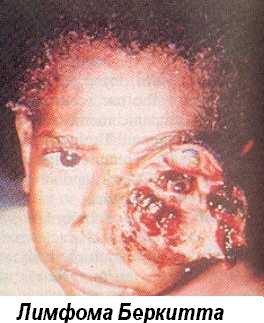

Лимфомы.
"Нигде в патологии хаос терминов так не
затуманил ясные концепции - как в области
лимфоидных опухолей"
Руперт Виллис (1948)
Лимфомы - неопластические заболевания из клонов лимфоцитов, формирующие солидные опухоли. В широком смысле, все лимфолейкозы могут быть включены в это определение на соответствующей стадии своего течения. Но, традиционно лимфомами считаются только такие лимфоидные неоплазмы, которые берут начало вне костного мозга (в лимфоузлах, в рассеянных неинкапсулированных скоплениях лимфоидной ткани слизистых оболочек, реже - в селезёнке и в тимусе). Принципиально важно, что из-за рециркулирующего характера нормальных лимфоцитов, лимфомы могут возникать во многих органах, не имеющих прямого отношения к кроветворной и иммунной системе, например, в яичнике - и некоторые из них даже проявляют тенденцию к первичной локализации вне лимфоидной ткани. О лейкозе говорят при костномозговом происхождении бластов и выраженной циркуляции их в крови. О лимфоме - при наличии локального признака "плюс-ткань". Так как к моменту установки диагноза при лимфолейкозе или лимфоме могут быть заселены бластами и костный мозг, и лимфоузлы - граница между лимфомами и лимфолейкозами становится относительной. Выше мы уже обращали внимание читателя на аналогию некоторых форм лимфолейкоза и определённых лимфом. Лимфомы могут прогрессировать в лимфолейкозную стадию и сосуществовать с лимфолейкозом.
В хирургии прежде лимфомой долгое время называли любую опухоль из клеток лимфоузла. Поэтому гистиоцитоз, берущий начало из макрофагальных клеток лимфатических узлов, известен под причудливым традиционным именем "гистиоцитарная лимфома" (см. выше - о терминах в онкогематологии). Помимо истинных гистиоцитарных опухолей лимфоузлов, "гистиоцитарными лимфомами" долго называли неоплазмы из похожих внешне на гистиоциты иммунобластов - то есть, зрелых Т- и В-лимфоцитов, претерпевших бласт-трансформацию и активацию. По современной номенклатуре, это имунобластные лимфомы. Наконец, лимфомой de facto является миеломная болезнь, поскольку при ней злокачественный клон исходит из лимфоидных плазматических клеток. К данной группе причисляется и лимфогранулёматоз, который Ходжкин (1832) описал именно как особую лимфому (лимфома Ходжкина). Однако, в лимфоидной природе клона злокачественных клеток при лимфогранулёматозе до недавнего времени существовали сомнения (см. ниже). Тем не менее, за океаном все остальные лимфомы именуют "неходжкинскими", и данный термин является, в отличие от многих в этой области, совершенно однозначным и навсегда истинным - ибо обозначает, что их описал не доктор Ходжкин, а другие специалисты.
Термин "лимфома" предложил в ХIХ cтолетии Бильрот. Ранее опухоли из лимфоцитов входили в группу, обозначавшуюся как "гематосаркомы".
Все лимфомы считаются злокачественными, но в различной степени. Поэтому среди принципов классификации этих опухолей имеется не только гистологический (по виду лимфоцитов и их диффузному, либо фолликулоподобному распределению) и иммуноморфологический (по их антигенным маркерам), но и онкологический - по малой, средней или высокой степени малигнизации. Причина столь особенной терминологии - тот факт, что все лимфоциты, а не только злокачественные лимфобласты, физиологически рециркулируют, выходят в ткани, возвращаются в лимфоидные органы, подвергаются "хоумингу". Поэтому, подходя к лимфомам со стандартной онкологической логикой, невозможно чётко отделить метастазирование от обычного поведения лимфоцитов.
Это еще раз доказывает справедливость предположения Бернета о том, что между возникновением развитой иммунной системы и учащением неоплазии в филогенезе есть закономерная связь (см. выше). В самом деле, иногда кажется, что быть нормальным лимфоцитом - это и есть та минимальная степень "недоброкачественного" поведения клетки, которую терпит многоклеточный организм: лимфоциты подвержены клональной экспансии, соматическому мутированию, расселению, они повреждают клетки хозяина, выделяют некоторые присущие и неоплазмам цитокины - чем не повод если не для зачисления в "плохие парни" - то для "постановки на учёт"?
По-видимому, поддерживать антигенный гомеостаз организма можно, только рискнув антигенным постоянством самих лимфоцитов. Не случайно экспрессия онкогенов в лимфоидных клонах так часто связана с мутациями именно в тех хромосомах, где хранятся коды иммуноглобулиновых цепей или Т-клеточного рецептора и где происходит физиологическая реаранжировка генов. Применяется несколько классификаций лимфом. Непротиворечивые классификации громоздки, а удобные - иммуногистологически противоречивы. На протяжении ХХ века несколько раз бывало так, что едва лишь онкологи создадут удовлетворительную классификацию лимфом - иммунологи меняют терминологию в области обозначения лимфоидных клеток, а то и сами концепции об их генезе. Примером может служить обессмысливание термина "ретикулосаркома", который обязателен для всех руководств, изданных в 50-е - 60-е годы (см. напр. Лавкович, Кржеминьска-Лавкович 1964). Дело в том, что ретикулярными клетками тогда называли поздние стадии дифференцировки еще не открытых В-лимфоцитов (иммунобласты), безосновательно приписывая им роль стволовых элементов для всех лимфоидных, а то и всех кроветворных клеток. Как уже упоминалось выше, с современных позиций, опухоли из этих клеток - иммунобластные В-лимфомы.
Первую классификацию лимфом на основе светомикроскопической оценки морфологии лимфоцитов и архитектуры ткани опухоли предложил в 1966 г. Раппопорт. По степени тканевого атипизма он выделил диффузный тип и фолликулярный тип лимфом. Последний воспроизводит в примитивном виде черты организации лимфоидных фолликулов и, что характерно - фолликулярные лимфомы имеют существенно лучший прогноз, по сравнению с несущими более выраженные признаки тканевого атипизма диффузными. По морфологии клеток классификация Раппопорта включает:
- хорошо дифференцированные лимфомы (клетки, явно похожие на типичный лимфоцит периферической крови, с правильным округлым ядром и небольшим количеством агранулярной цитоплазмы);
- плохо дифференцированные лимфомы ( клетки имеют ядро неправильной или изогнутой формы).
- недифференцированные лимфомы (более крупные клетки, с избытком цитоплазмы, напоминающие макрофаги). В последней группе, по Раппопорту, оказываются "гистиоцитарные лимфомы" и смешанноклеточные лимфомы.
После открытия Т- и В-лимфоцитов и их разновидностей стало ясно, что классификация длимфом нуждается в пересмотре. Оказалось, что градации Раппопорта представлены иммунологически разнородными клетками, которые принадлежат к различным видам и стадиям дифференцировки лимфоцитов.
Так, хорошо дифференцированные лимфомы могли происходить из малых В- и Т-лимфоцитов, включая Т-эффекторы. Плохо дифференцированные лимфомы оказались разнородной группой, включающей опухоли из полустволовых лимфоидных ни-Т, ни-В-клеток, Т-лимфобластов и В-лимфобластов, а иногда - В-клеток фолликулярных центров. Последние клеточные элементы могли также представлять субстрат некоторых смешанных и даже псевдогистиоцитарных лимфом. "Гистиоцитарная" лимфома, вообще, распалась на иммуноморфологически различные немакрофагальные В- или Т-иммунобластные опухоли, и лишь небольшой процент случаев оказался представлен истинно гистиоцитарными клонами. Обобщая эти данные, с новыми классификациями лимфом выступили Льюкс и Коллинз (1974) в США и Леннерт (1973) в Европе. Принцип этих градаций был иммуногистологическим и соответствовал стадиям дифференцировки лимфоцитов и происхождению соответствующих лимфоматозных клонов.
Табл. 16. Классификация неходжкинских лимфом (По Льюксу-Коллинзу-Леннерту, 1974).
Новообразование |
Происхождение
неопластического клона |
1.Из
лимфоидных полустволовых клеток: |
|
Лимфобластная лимфома / ОЛЛ пре-В типа |
Полустволовая лимфоидная клетка, лимфобласт; лишённый маркеров Т- и В- линий. |
2.Из
клеток Т-лимфоидной линии: |
|
Лимфобластная Т-лимфома/ Т-клеточный ОЛЛ |
Т-лимфобласт |
Лимфоцитарная Т-лимфома/Т-клеточный ХЛЛ |
Малый Т-лимфоцит |
Иммунобластная Т-лимфома (иммунобластная лимфосаркома) |
Бласт-трансформированный Т-лимфоцит (Т-иммунобласт) |
Фунгоидный "микоз"/синдром Сезари |
Посттимический CD4+ Т-лимфоцит |
3.Из клеток В-лимфоидной линии: |
|
Лимфобластная В-лимфома/В-клеточный ОЛЛ |
В-лимфобласт |
Лимфоцитарная В-лимфома/В-клеточный ХЛЛ |
Малый В-лимфоцит |
В-Лимфома мантийной зоны (из промежуточных клеток) |
В-клетка мантийной зоны лимфоузла |
Моноцитоидная В-лимфома |
В-лимфоцит |
Лимфомы из В-клеток фолликулярных центров, включая лимфому Бёркитта / ОЛЛ L3 |
В-клетка фолликулярных центров |
Иммунобластная В-лимфома (иммунобластная лимфосаркома) |
В-иммунобласт |
Плазмацитоидная лимфоцитарная В-лимфома (миелома) |
Плазматическая В-клетка |
4.
Из гистиоцитов лимфоидных органов: |
|
Истинная гистиоцитарная "лимфома" |
Гистиоцит |
Позже, Национальный Институт Рака (NIC) США принял рабочую клиническую классификацию неходжкинских лимфом, основанную на прагматическом принципе хорошего, промежуточного или плохого прогноза ("классификация NIC", 1982). Все лимфомы, включённые в классификацию NIС, подразделяются на 3 группы.
- 1.Лимфомы низкой степени злокачественности - с
длительным малосимптомным течением, лучшим
прогнозом для жизни (в 60-70% случаев - более 5 лет),
но высокой резистентностью к терапии. Сюда
относят:
- 1.1. Лимфому (и ХЛЛ) из малых лимфоцитов - диффузную, хорошо дифференцированную.
- 1.2. Плазмацитоидную лимфому (при макроглобулинемии Вальденстрёма)
- 1.3. Фолликулярные лимфомы - из малых расщеплённных клеток и смешанно-клеточную.
- 1.4. В-лимфому мантийной зоны
- 1.5. Моноцитоидную В-лимфому
- 2.Лимфомы промежуточной степени
злокачественности, которые имеют более
агрессивное течение, но поддаются терапии, и при
которых 35-45% пациентов живут дольше 5 лет, в том
числе:
- 2.1. Фолликулярная крупноклеточная лимфома
- 2.2. Диффузная лимфома из малых расщеплённых клеток
- 2.3. Диффузная лимфома из крупных расщеплённых и нерасщеплённых клеток
- 2.4. Диффузная смешанно-клеточная лимфома
- 3. Лимфомы высокой степени злокачественности -
все диффузные, агрессивные, без лечения быстро
приводящие к летальному исходу, поддающиеся
терапии при вероятности 5-летних ремиссий 23-32%, в
том числе:
- 3.1.Иммунобластная лимфома
- 3.2.Лимфобластная лимфома
- 3.3.Лимфома из малых нерасщеплённых клеток, включая тип Бёркитта.
Нарекания в адрес классификации NIС были связаны с её неполнотой (не включены миеломная болезнь, синдром Сезари и другие нозологические формы) и с отстутсвием деления на Т- и В-лимфомы. Тем временем, как уже описывалось выше, большая часть случаев ОЛЛ L1 была переквалифицирована из "полустволовых лимфоидных 0-клеточных" (группа 1 в классификации Льюкса-Коллинза-Леннерта) в пре-В-клеточные. Требовалось привести в соответствие с этим и номенклатуру лимфом. Кроме того, появились представления о возможности неоплазм, исходящих из NK-клеток. Поэтому совершенствование класификаций было продолжено. Наконец, новым достижением в этом любимом жанре онкогематологов стала классификация Хэрриса и соавторов REAL (The Revisеd Euro-American Classification of Lymphoid Neoplasms), предложенная в 1995 г. Так как она наиболее непротиворечива и всеобъемлюща с патофизиологической точки зрения, знакомим с нею читателя.
Классификация REAL неходжкинских лимфом (по Хэррису и соавт., 1995).
- 1. В-клеточные:
- 1.1.Из предшественников В-клеток:
- 1.1.1. Пре-В-клеточный лимфобластный лейкоз/лимфома
- 1.2. Из В-клеток периферического фенотипа:
- 1.2.1. В-клеточный ХЛЛ/мелкоклеточная лимфоцитарная лимфома
- 1.2.2. Лимфоплазмацитоидная лимфома/иммуноцитома
- 1.2.3. Лимфома из мантийных клеток
- 1.2.4. Лимфома из клеток фолликулярных центров,
фолликулярная
- 1.2.4.1. Из малых клеток; из больших клеток; смешанная - из малых и больших.
- 1.2.4.2. Диффузная из малых клеток
- 1.2.5. Лимфома из клеток маргинальной зоны
- 1.2.5.1. Внеузловая (в неинкапсулированных лимфоидных элементах слизистых, с моноцитоидным или без моноцитоидного фенотипа)
- 1.2.5.2. Узловая (в лимфоузлах, с моноцитоидным или без моноцитоидного фенотипа)
- 1.2.5.3. Селезёночная (в селезёнке, с ворсинчатыми лимфоцитами или без)
- 1.2.6. Волосатоклеточный хронический лимфолейкоз
- 1.2.7. Плазмоцитома/миеломная болезнь
- 1.2.8. Диффузная крупноклеточная В-лимфома
- 1.2.9. Лимфома Бёркитта
- 1.1.Из предшественников В-клеток:
- 2. Т-клеточные и NK-клеточные лимфомы:
- 2.1. Из предшественников Т-клеток:
- 2.1.1. Т-лимфобластный лейкоз/лимфома
- 2.2. Т-клеточные лимфомы из клеток с
периферическим фенотипом и NK-клеток
- 2.2.1. Т-клеточный ХЛЛ/пролимфоцитарный лейкоз
- 2.2.2. "Крупногранулярный" NK-клеточный и Т-клеточный лейкоз
- 2.2.3. Грибовидный "микоз" и синдром Сезари
- 2.2.4. Т-лимфома с периферическим фенотипом
- 2.2.4.1. Смешанная лимфома, из средних и больших или больших клеток, лимфоэпителиоидная.
- 2.2.5. Ангиоиммунобластная Т-лимфома
- 2.2.6. Ангиоцентрическая Т-лимфома
- 2.2.7. Кишечная Т-лимфома (с энтеропатией или без)
- 2.2.8. Анапластическая крупноклеточная лимфома CD30+ ; Т-клеточная или 0-клеточная.
- 2.1. Из предшественников Т-клеток:
Мировая совокупная частота лимфом почти равна частоте лейкозов, эти заболевания представляют по 4% спектра онкологической патологии и вместе занимают шестую позицию среди всех злокачественных неопластических болезней по распространенности. Лимфомы, наряду с лимфобластным лейкозом, главная проблема детской онкогематологии и основная солидная опухоль у молодых людей. У детей часто встречаются фолликулярные лимфомы из малых нерасщеплённых лимфоцитов (50%) и лимфобластные лимфомы (40%), а также бывает (в основном, в старшем детском и подростковом возрасте) лимфогранулёматоз. У взрослых спектр лимфом более полиморфный, хотя чаще всего бывают фолликулярные мелкоклеточные расщеплённые формы (35%) и лимфогранулёматоз (15%). Лимфомы чаще всего поражают негроидов и реже всего - монголоидов. Пораженность европеоидов - промежуточная. Заболеваемость лимфомами в Америке и Африке выше, чем в странах Евразии. Так, в США заболеваемость лимфомами 13,2 на 100 000 населения в год, в России она намного ниже. Некоторые лимфомы эндемичны. Лимфома Бёркитта, весьма часто встречаемая в малярийном поясе, особенно - в Тропической Африке и на острове Папуа-Новая Гвинея, сравнительно редко наблюдается вне основного ареала. Ретровирусная Т-клеточная лимфома-лейкоз взрослых нередка на острове Окинава и на островах Карибского моря, а в других регионах представлена завозными случаями.

Этиология некоторых лимфом, вполне определённо - вирусная. Это доказано, в частности, для лимфомы Бёркитта (вирус Эпштейна-Барр), для человеческого ретровирусного Т-клеточного лейкоза/лимфомы (см. выше) и для некоторых других лимфом высокой степени злокачественности, а также для многих лимфом птиц и животных, включая приматов. Условия, повышающие риск возникновения лимфом, включают ряд факторов: наследственные и приобретённые иммунодефициты, аутоаллергическая болезни (целиакия, синдром Шёгрена, системная красная волчанка, аутоиммунный тиреоидит, дерматомиозит, ревматоидный артрит), действие некоторых лекарств (циклоспорины, фенитоин, цитостатики), облучение. В лимфоматозных клонах обычны соматические мутации и экспрессия протоонкогенов и химерных генов.
Отдельные наиболее распространённые формы
лимфом имеют некоторые
клинико-патофизиологические особенности.
В-лимфомы, в целом, встречаются намного чаще
Т-лимфом. Патогенетически важно, что в В-лимфомах
часто присутствуют соматические мутации,
вовлекающие хромосомы 14 (где находится энхансер
тяжёлых цепей иммуноглобулинов), 2 (с локусами
реаранжируемых k-лёгких цепей антител) или 22 (с
локусами реаранжируемых l-лёгких цепей). В
юкстапозиции с этими генами могут переноситься
при транслокациях протоонкогены c-myc из 8-й или bcl-2
- из 18-й хромосом. Это ведет к гиперэкспрессии
протоонкогенов, необходимому звену патогенеза
лимфом. Наиболее часто наблюдаются опухоли из
клеток фолликулярных центров лимфоузлов. Эти
опухоли могут иметь диффузное строение, что
связано с более плохим прогнозом и более
выраженной злокачественностью. Однако, чаще
всего, они сохраняют фолликулярную структуру,
состоят из малых клеток с расщеплёнными ядрами и
имеют благоприятное течение, с низкой скоростью
обновления клеточного пула, причём поддаются
химиотерапии алкилирующими цитостатиками и
антиметаболитами. В лечении применяется
трансплантация костного мозга. Клетки опухоли
расселяются экстранодально, но пролиферируют
медленно. Однако, как правило, эти лимфомы
рецидивируют после химиотерапии и
трансплантации. Наиболее характерная для данных
лимфом мутация - транслокация t 14®18 bcl2. Диффузные
крупноклеточные лимфомы характеризуются
быстрым ростом, интенсивным обновлением
клеточного субстрата и малой продолжительностью
жизни пациентов, при отстуствии лечения. Они
провоцируют ряд осложнений, в частности,
задержку мочеиспускания, связанную с
инфильтрацией стенок уретры и ее пережатием.
Анапластические клетки данной разновидности
лимфом чувствительны к химиотерапии, в частности
- по наиболее распространённой схеме CHOP
(циклофосфан, доксорубицин, винкристин,
преднизон). Особенно способствуют
благоприятному безрецидивному прогнозу молодой
возраст пациента, низкая сывороточная
активность ЛДГ и отстутствие внеузловых
проявлений.
Лимфома Бёркитта - разновидность мелкоклеточной
нерасщеплённой фолликулярной лимфомы, поражает,
в основном, детей. Она представлена эндемической
"африканской" формой и спорадической
"американской". Африканская форма
соответствует по распространенности ареалу
малярии. При ней поражение касается, в первую
очередь, верхней или нижней челюсти, гораздо реже
- подчелюстных лимфоузлов, а экстранодальная
диссеминация вовлекает скелет и, очень часто -
ЦНС. При американской форме поражаются, вначале
абдоминальные органы, причём, опять-таки, не сами
лимфоузлы, а кишечник, яичник, забрюшинное
пространство и т.д. Потом следует длительный рост
опухоли на месте, а затем - распространение на
кожу, кости, периферические лимфоузлы и, изредка -
в ЦНС. Агрессивная терапия позволяет вызвать
стойкую ремиссию почти у половины больных. В
середине минувшего столетия эпидемиологию и
клинику эндемической формы этой лимфомы изучил,
доказав её связь с инфекцией, врач британской
колониальной администрации Бёркитт, один из
выдающихся подвижников медицины ХХ века.
Интересно, что на всем протяжении своих
многотрудных исследований, потребовавших
разъездов по Тропической Африке, доктор Бёркитт
работал, практически, в одиночку, а от
государства получил только… дотацию в 50 фунтов
стерлингов для покупки пишущей машинки и 200
фунтов на подержанный джип.
При африканской форме лимфомы Бёркитта доказана
роль вируса Эпштейна-Барр, делающего клоны
В-клеток бессмертными, а также необходимость
нескольких дополнительных шагов онкогенеза,
связанных с соматическими мутациями. На ранней
стадии для формирующегося неопластического
клона большое значение имеет продукция
В-клеточного ростового фактора, стимулируемая
малярией и другими хроническими инфекциями.
Затем, транслокация с участием протоонкогена с-myc
(8-я хромосома) и генов- энхансеров различных
цепей иммуноглобулинов (хромосомы 14, 2 или 22)
приводит к гиперэкспрессии химерного онкобелка
и делает рост клона автономным от ростовых
факторов. Для спорадической формы связь с
вирусной и иной инфекцией чётко не
прослеживается.
В-лимфомы мантийной зоны чаще поражают пожилых
пациентов. Они отличаются массивной
экстранодальной инфильтрацией органов и тканей,
а также нередким наличием маркера CD5, несмотря на
принадлежность к В-лимфомам. Многие из них имеют
транслокацию 11®14 и химерные гены с участием bcl-1.
Моноцитоидная В-лимфома - также заболевание
пожилых, но экстранодальное вовлечение для неё
не типично (не более, чем в 15% случаев). В-клетки
этой лимфомы могут иметь сходство с моноцитами и
моноцитарный маркер C11. Иммунобластные В-лимфомы
клинико-эпидемиологически связаны часто с
иммунопатологическими заболеваниями
(иммунодефицитными состояниями,
гиперчувствительностью, коллагенозами,
тиреоидитом Хашимото, болезнью холодовой
гемагглютинации). Они представлены крупными
базофильными иммунобластами, часто -
напоминающими плазматические клетки и являются
быстро прогрессирующими, высоко
злокачественными новообразованиями.
Плазмоцитоидные В-лимфомы представлены клонами
злокачественных плазматических клеток. Их ядра
часто содержат особые образования - базофильные
тельца Датчера. Характерной клинической
особенностью данных лимфом служит
парапротеинемия. Как правило, имеется аномальный
избыток моноклональных IgM в сыворотке, придающий
ей повышенную вязкость (макроглобулинемия
Вальденстрёма). Последствиями могут быть
протеинурия белками Бенс-Джонса и амилоидоз
почек (см. т. 2, гл. 5, а также ниже "Миеломная
болезнь").
Т-клеточные лимфомы представляют редкость и их доля среди всех лимфом не превышает 10%. В патогенезе этих новообразований играют большую роль транслокации и генные реаранжировки с участием гена Т-клеточного рецептора и протоонкогенов, например t 1®14 c cозданием химерного гена tal-1-TCR. Т-лимфомы, чаще всего, весьма злокачественны. Относительно доброкачественным течением отличается лишь редкий Т-клеточный вариант хронического лимфолейкоза. Выше обсуждался ретровирусный Т-клеточный лимфолейкоз/лимфома взрослых, у которого часто бывает молниеносное течение и при котором даже агрессивная терапия не продляет жизнь пациентов более, чем до года. Наиболее частые среди данного подтипа лимфом, иммунобластные Т-лимфомы и лимфобластные Т-лимфомы, также, высоко злокачественны. Нозологически определённой формой Т-лимфомы является грибовидный "микоз"/синдром Сезари. Это неоплазма из зрелых CD4+ Т-лимфоцитов, посттимических стадий дифференцировки которая отличается, исключительно, экстранодальными проявлениями. Неопластические клетки присутствуют в крови, костном мозге и коже. При собственно синдроме Сезари поражение не касается селезёнки и лимфоузлов, при грибовидном микозе эти органы, со временем, вовлекаются в процесс. Собственно дерма и эпидермис инфильтрируются клоном патологических неопластических Т-клеток с характерными "мозговидными" ядрами. При грибовидном микозе поражение кожи проходит 3 стадии - воспалительную, бляшечную и, собственно, опухолевую. Мозговидно-ядерные лимфоциты в крови появляются во 2-й - 3-й стадиях и не столь многочисленны. Синдром Сезари внешне ограничивается воспалительными кожными проявлениями типа эритемы и эксфолиативного дерматита, до туморозной стадии кожное поражение доходит редко. Зато в крови атипические клетки изобилуют с самого начала. Возможно, две формы одного заболевания связаны с различной субклональной эволюцией одной и той же неоплазмы. Прогноз обещает, в среднем, срок выживания около 8-10 лет, причём с относительным успехом применяется экстракорпоральное облучение крови, особенно при синдроме Сезари.
|
|
|
|
|